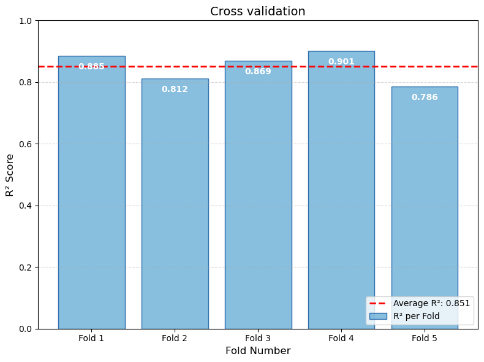

01
明确模型在工作流中的角色
候选材料数量较多，无法全部进入高精度计算和实验验证，因此需要建立前期筛选工具。
基于公开材料数据库、成分与结构特征工程以及回归建模， 我建立了一套用于候选材料初步筛选的预测与可靠性验证流程。
每一个技术环节都对应一个明确判断，并由相应实现与结果证据支撑。
候选材料数量较多，无法全部进入高精度计算和实验验证，因此需要建立前期筛选工具。
从 Materials Project 获取 Li–O 三元与四元氧化物数据，并以每原子形成能作为连续预测变量。
with MPRester(get_materials_project_credential()) as mpr:
docs = mpr.summary.search(
elements=["Li", "O"],
num_elements=(3, 4),
band_gap=(0.1, None),
fields=[
"material_id",
"formula_pretty",
"structure",
"formation_energy_per_atom",
],
)根据研究对象设置元素体系、元素数量与 band gap 条件，并批量获取后续建模所需字段。
使用 matminer 将化学组成、元素属性以及密度与堆积信息转化为 135 个模型输入。
df = StrToComposition().featurize_dataframe(
df, "formula", ignore_errors=True
)
element_features = ElementProperty.from_preset("magpie")
df = element_features.featurize_dataframe(
df, "composition", ignore_errors=True
)
density_features = DensityFeatures()
df = density_features.featurize_dataframe(
df, "structure", ignore_errors=True
)
df = df.dropna()将化学式和三维结构转换为可学习变量，并清理无法形成完整特征表示的样本。
使用 scikit-learn MLPRegressor 建立从 135 个材料特征到形成能的非线性映射。
model = MLPRegressor(
hidden_layer_sizes=(128, 64, 32),
activation="relu",
solver="adam",
alpha=0.01,
early_stopping=True,
random_state=42,
)
model.fit(X_train_scaled, y_train)明确隐藏层结构、激活函数、优化器、正则化强度与随机种子，并通过 early stopping 控制训练。
依次使用独立测试集、训练—测试表现比较和五折交叉验证检验预测有效性、泛化能力与重采样稳健性。
cv_scores = cross_val_score(
model,
X_train_scaled,
y_train,
cv=KFold(
n_splits=5,
shuffle=True,
random_state=42,
),
scoring="r2",
n_jobs=-1,
)通过五组不同训练与验证划分观察模型表现波动，避免只依赖一次随机划分。
训练损失用于判断收敛情况，实际值—预测值分布用于评价未见样本上的预测表现与异常偏差。

测试集达到 R² = 0.8902、MAE = 0.0626 eV/atom。
损失在训练初期快速下降并逐步稳定，表明模型训练已基本收敛。
多数测试样本接近理想预测线，说明模型捕捉到了主数据分布中的形成能关系。
少数样本仍出现明显偏差，说明总体指标不能代表所有材料类型的预测表现。
验证过程分别检验未见样本预测、训练—测试泛化差异以及不同数据划分下的性能波动。
在完全独立的测试集上评价预测表现。
比较训练集与测试集的性能差异。
使用五折交叉验证检验性能波动。

五折 R² 范围为 0.7864–0.9009，显示模型总体有效，但仍存在数据划分敏感性。
训练集与测试集表现接近，未观察到显著泛化落差；但不同折之间仍存在可见波动，因此不能仅依据单次最佳结果评价模型。
该模型在独立测试与重采样验证中表现出较好的整体预测能力，可用于缩小后续高精度计算和实验验证的候选范围；异常偏差与数据划分波动则限定了其适用边界。